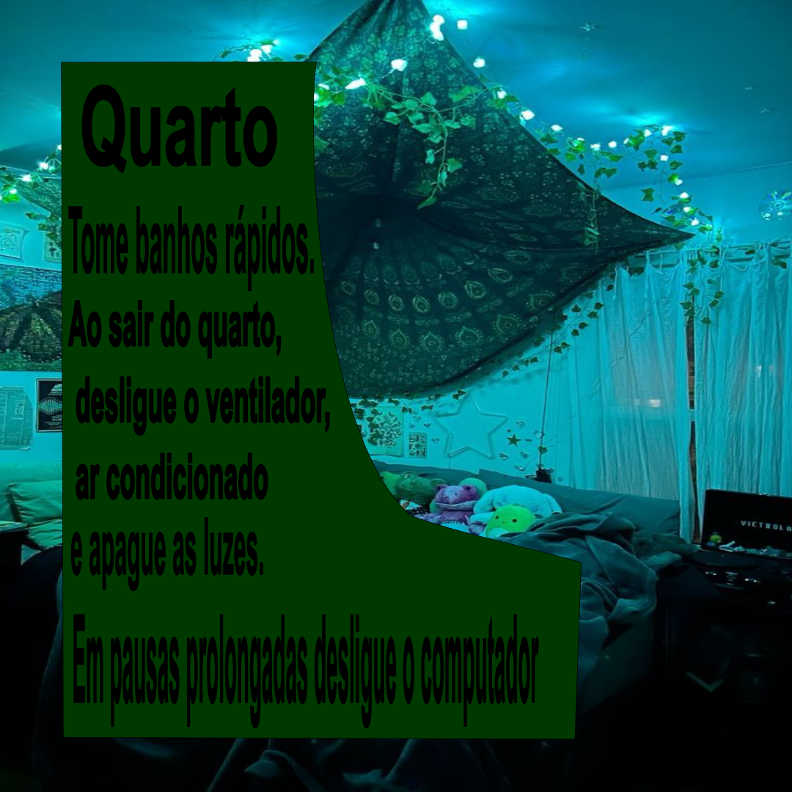
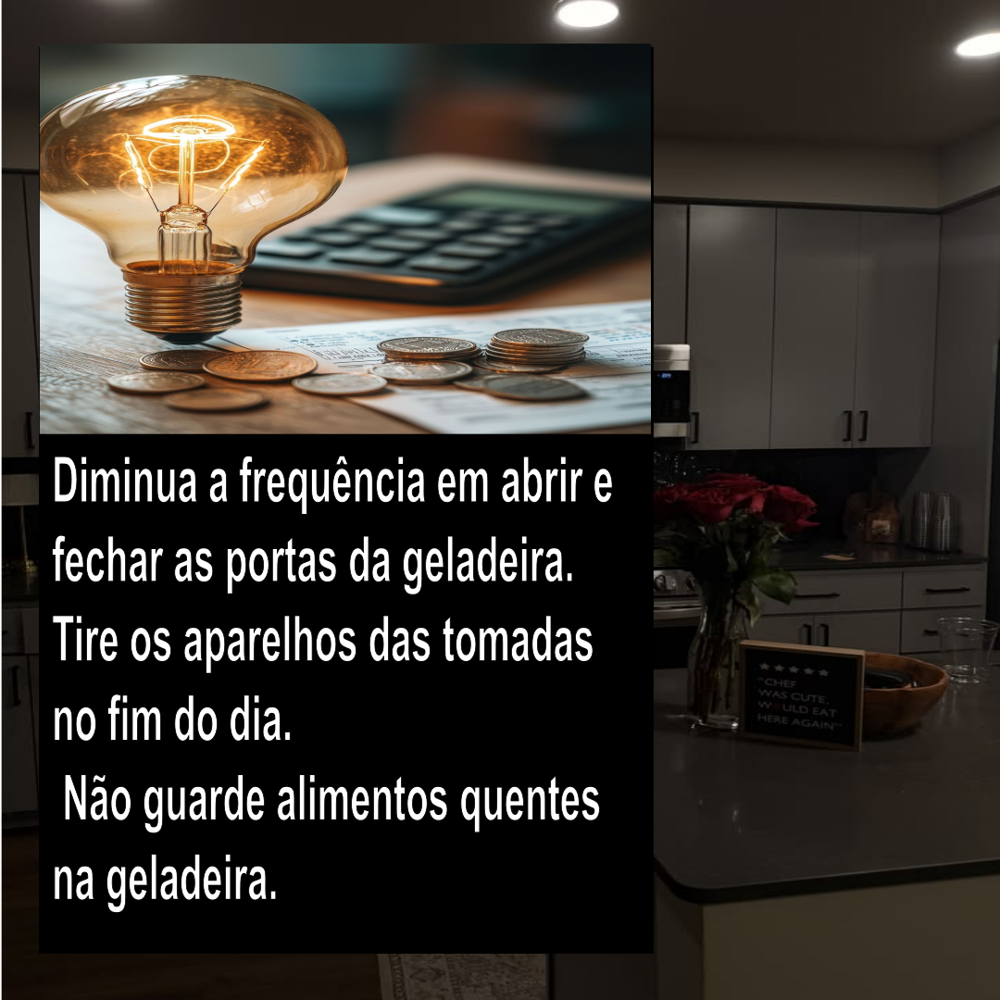
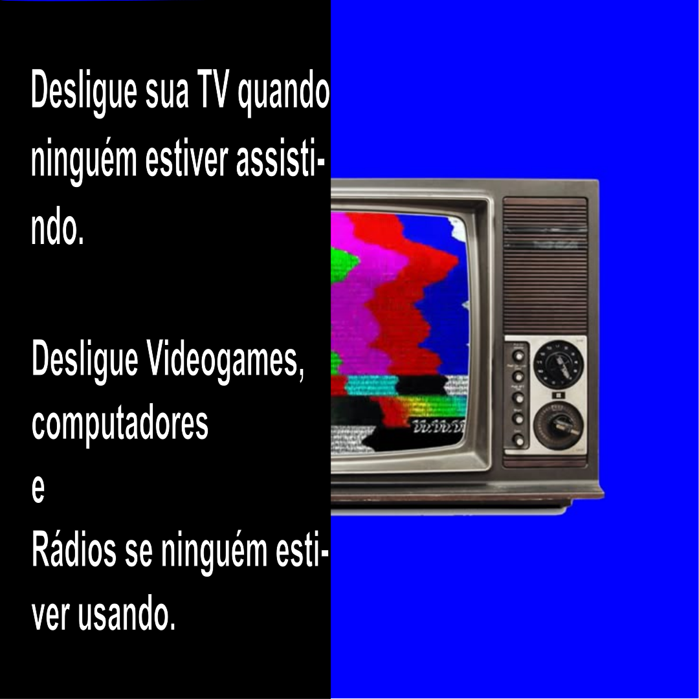
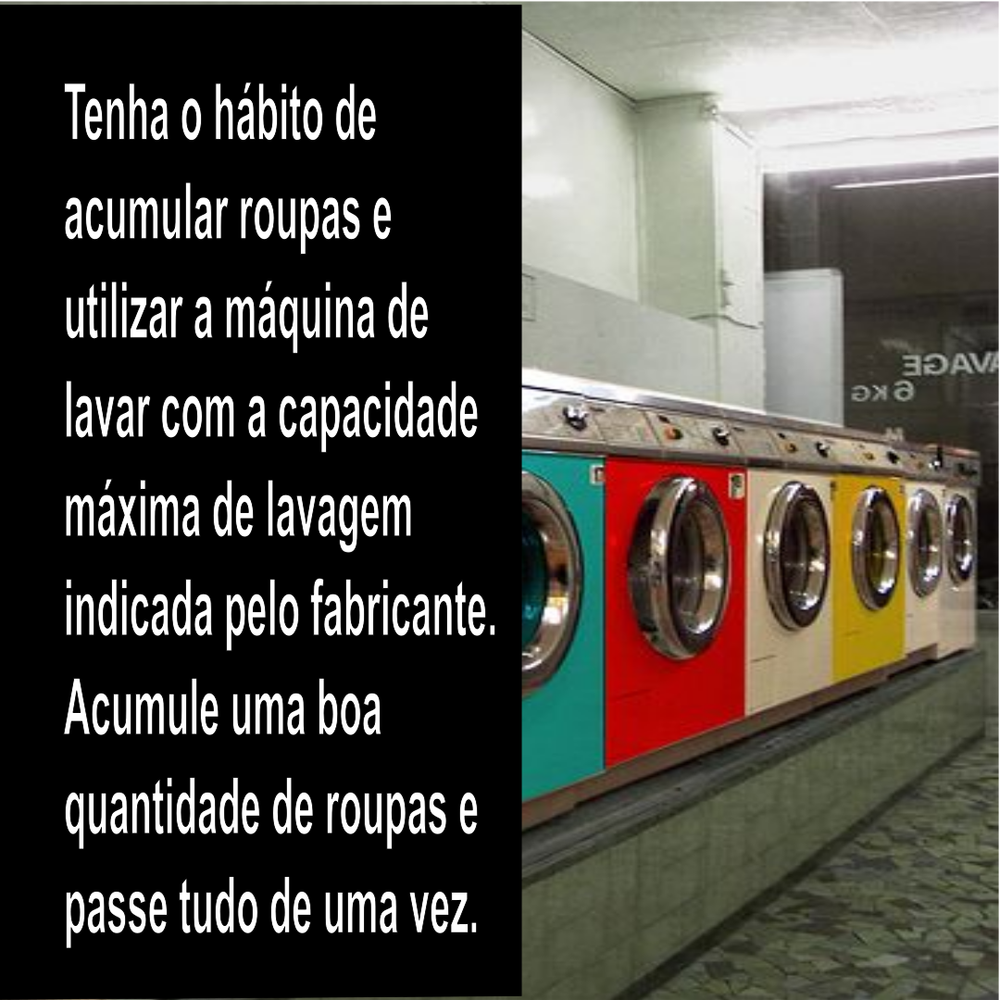
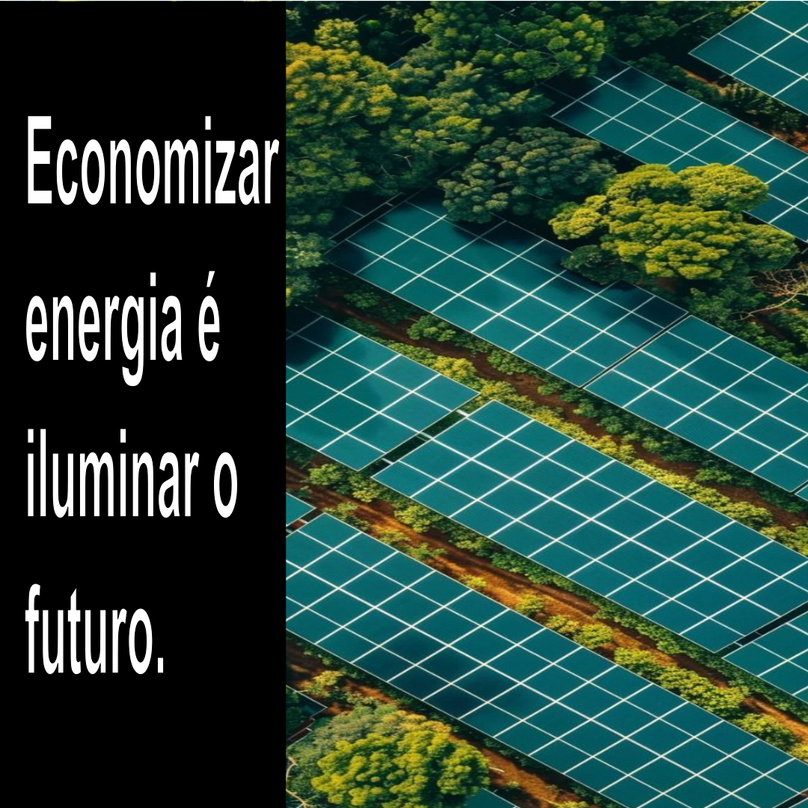
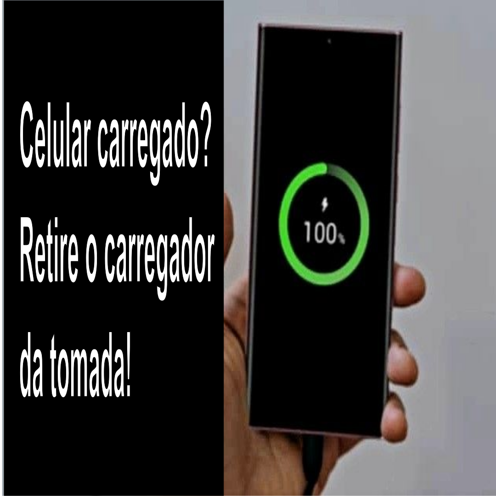

O que foi sobre o primeiro card?

O card foi feito com a intenção de relembrar de desligar equipamentos eletrônicos/elétricos quando sair do quarto por tempo prolongado.
O segundo card foi feito para lembrar de diminuir a frequência que você abre a geladeira para pegar algo ou guardar algo, não esqueça de não guardar alimentos quentes dentro da geladeira.


O terceiro card é para lembrar sobre as TV's e computadores que consomen muito energia quando ligados por grandes quantidades de tempo em geral, por exemplo algumas pessoas usam a TV da sala como "background noise", usam como barulho de fundo para fazer alguma coisa(geralmente mecher no celular)
Esse card em especifico é bem mais respeitado na vida real, incentiva a lavagem total das roupas, no caso, a máquina de lavar usa a mesma quantidade de água por Lavagem então é bem importante lavar o máximo de roupas possiveis quando for lavar com a máquina

Sobre oque é o quinto card?

O quinto card é sobre a energia em geral, no caso ele enfatiza mais a economia de energia para um futuro melhor, podendo reduzir a demanda de energia atual(principalmente a fóssil).
O Sexto card e seu impacto real no consumo de energia

O sexto card mesmo que não parecendo muito importante pois celulares não consumen tanta energia como TV's e geladeiras, o sobre uso dele causa uma demanda energética grande, mesmo sendo barato, ele é carregado em massa, principalmente em celulares velhos e viciados, um celular viciado pode necessitar de até 3x mais carregamento differentemente de um normal.
voltar ao topo da página topo